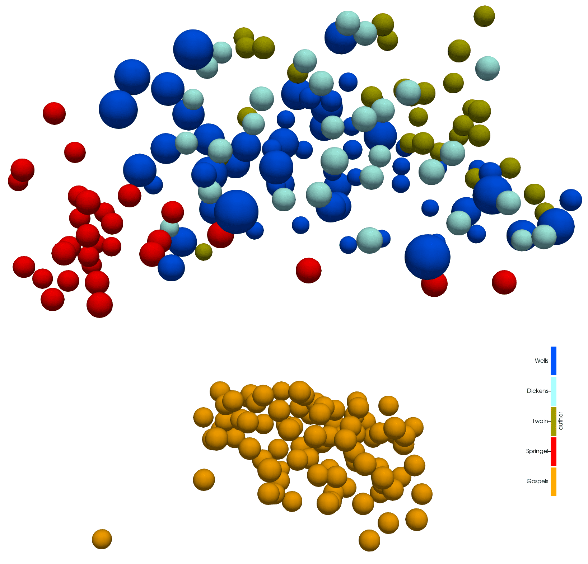
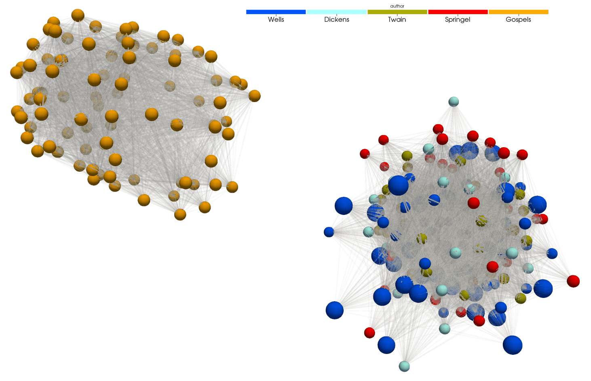

Python Basics for Humanists
Thursday, February 15, 2024, 2:00-3:00pm EST
You can find this page at https://folio.vastcloud.org/humanitiespython
Presented by: Alex Razoumov (SFU)
Description: In this short session, we will demo some of Python’s capabilities to researchers new to the language, starting with multiple ways to run Python, high-level data collections such as lists and dictionaries, using Python for data processing and manipulation, and data visualization. This short lecture-style course will be followed by a separate, full-day interactive Python workshop in which we will thoroughly study all these topics through hands-on exercises. This follow-up workshop will occur in the weeks after the 2024 HSS Winter Series.
The goal of today’s workshop is to demo some Python functionality, to give you a taste of the language’s capabilities. We are not learning Python today, and we will not be doing any hands-on exercises, so please relax and watch the presentation. The three followup sessions on February 26-28 will teach you Python with many hands-on exercises (6 hours in total).
Why Python?
Python is a free, open-source programming language first developed in the late 1980s and 90s that became really popular for scientific computing in the past 15 years. With Python in a few minutes you can: - analyze thousands of texts, - process tables with billions of records, - manipulate thousands of images, - restructure and process data any way you want.
Python vs. Excel
- Unlike Excel, Python can read any type of data, both structured and unstructured.
- Python is free and open-source, so no artificial limitations on where/how you run it.
- Python works on all platforms: Windows, Mac, Linux, Android, etc.
- Data manipulation is much easier in Python. There are hundreds of data processing, machine learning, and visualization libraries.
- Python can handle much larger amounts of data: limited not by Python, but by your available computing resources. In addition, Python can run at scale (in parallel) on larger systems.
- Python is more reproducible (rerun / modify the script).
Python vs. other programming languages
| Python pros | Python cons |
|---|---|
| elegant scripting language | slow (interpreted, dynamically typed) |
| easy to write and read code | uses indentation for code blocks |
| powerful, compact constructs for many tasks | |
| very popular across all fields | |
| huge number of external libraries |
Installing Python
Option 1: Install Python from https://www.python.org/downloads making sure to check the option “Add Python to PATH” during the installation.
Option 2: Install Python and the packages via Anaconda from https://www.anaconda.com/download.
Option 3: Install Python via your favourite package manager, e.g. in MacOS – assuming you have Homebrew installed – run the command brew install python.
Post-installation: Install 3rd-party Python packages in the Command Prompt / terminal via pip install <packageName>, e.g. to be able to run Python inside a Jupyter Notebook run pip install jupyter.
Starting Python
There are many ways to run Python commands:
- from a Unix shell you can start a Python shell and type commands there,
- you can launch Python scripts saved in plain text *.py files,
- you can execute Python cells inside a Jupyter notebook; the code is stored inside JSON files, displayed as HTML
Getting help
help(print)
?print # only inside JupyterHigh-level data collections
Python has a number of built-in composite data structures: tuples, lists, sets, dictionaries. Here we take a look at lists and dictionaries.
Lists
A list stores many values in a single structure:
events = [267, 1332, 1772, 1994, 493, 1373, 1044, 156, 1515, 1788] # array of years
print('events:', events)
print('length:', len(events))
print('first item of events is', events[0]) # indexing starts witgh 0
events[2] = 1773 # individual elements are mutable
print('events is now:', events)
events.append(1239)
events.append(606)
print('events is now:', events)
events.pop(4) # remove element #4
print('events is now:', events)
events.remove(...) # remove by value (first occurrence)Lists can be inhomogeneous:
a = []
a.append(1)
a.append('Vancouver')
a.append(3.5)and can even be nested (contain other lists):
a.append(['Mercury', 'Venus', 'Earth', 'Mars'])
a
a[-1]You can search inside a list:
'Venus' in a[-1] # returns True
'Pluto' in a[-1] # returns False
a[-1].index('Venus') # returns 1 (position index)
planets = a[-1]
planets.sort() # you sort lists alphabeticallyThe initial list I showed you was generated via a list comprehension:
[random.randint(0,2024) for i in range(10)]
[x**2 for x in range(1,31)]
[x**2 for x in range(1,11) if x%2==1] # list only odd number squares
colours = ['red', 'green', 'white', 'black', 'pink', 'yellow']
[c for c in colours if len(c) <= 4]Let’s compute a difference between two lists, i.e. find unique elements in each:
a = [1, 2, 3, 4, 6, 10]
b = [1, 2, 5, 10]
for i in a:
if i not in b:
print(i, "is not in b")
for i in b:
if i not in a:
print(i, "is not in a")In Python very often you can have multiple solutions to the same problem. E.g., let’s write a script to get the frequency of all elements in a given list:
Solution 1:
a = [77, 9, 23, 67, 73, 21, 23, 9]
a.count(77) # prints 1
a.count(9) # prints 2
for i in a:
a.count(i) # counts the frequency of 'i' in list 'a' ... redundant outputSolution 2:
a = [77, 9, 23, 67, 73, 21, 23, 9]
for i in set(a):
print(i, "is seen", a.count(i)) # no redundant outputSolution 3:
a = [77, 9, 23, 67, 73, 21, 23, 9]
import collections
print(collections.Counter(a))Dictionaries
As you just saw, Python’s lists are ordered sets of objects that you access via their position/index. Dictionaries are unordered sets in which the objects are accessed via their keys. In other words, dictionaries are unordered key-value pairs.
Consider two lists:
names = ['Mary', 'John', 'Eric', 'Jeff', 'Anne'] # people
colours = ['orange', 'green', 'blue', 'burgundy', 'turquoise'] # and their respective favourite coloursThere is nothing connecting these two lists, as far as figuring a person’s favourite colour goes. You could do something like this using indices:
colours[names.index('Eric')]but this is a little too convoluted … A dictionary can help you connect the two datasets directly:
fav = {} # start with an empty dictionary
for name, colour in zip(names, colours): # go through both lists simultaneously
fav[name] = colour
fav # {'Mary': 'orange', 'John': 'green', 'Eric': 'blue', 'Jeff': 'burgundy', 'Anne': 'turquoise'}
fav['John'] # returns 'green'
fav['Mary'] # returns 'orange'
for key in fav:
print(key, fav[key]) # will print the names (keys) and the colours (values)There are other ways to organize the same information using dictionaries. For example, you can create a list of dictionaries, one dictionary per person:
names = ['Mary', 'John', 'Eric', 'Jeff', 'Anne'] # people names
colours = ['orange', 'green', 'blue', 'burgundy', 'turquoise'] # and their respective favourite colours
ages = [25, 23, 27, 32, 26] # let's include a third attribute
data = []
for name, colour, age in zip(names, colours, ages): # go through both lists simultaneously
data.append({'name': name, 'colour': colour, 'age': age})
person = data[0]
print(person)
print(person["name"], person["colour"])The benefit of this approach is that you can have many more attributes per person, that just name and colour, and this is very common way to organize structured and/or hierarchical data in Python. The downside is that – to search for by name – you have to do it explicitly:
for person in data:
if person["name"]=="Jeff": print(person["colour"], person["age"])or in a single line:
[(person["colour"], person["age"]) for person in data if person["name"]=="Jeff"]Finally, if you want performance, this will be the fastest way:
list(filter(lambda person: person["name"] == "Jeff", data))Here we: 1. apply the anonymous “lambda” function lambda person: person["name"] == "Jeff" to each item in the collection data; it returns True or False, 2. create an iterator yielding only those items in data that produced True, and 3. create a list from this iterator, in this case containing only one element.
You can see where dictionary got its name:
concepts = {}
concepts['list'] = 'an ordered collection of values'
concepts['dictionary'] = 'a collection of key-value pairs'
conceptsLet’s modify values:
concepts['list'] = concepts['list'] + ' - very simple'
concepts['dictionary'] = concepts['dictionary'] + ' - used widely in Python'
conceptsValues can also be numerical:
grades = {}
grades['Mary'] = 5
grades['John'] = 4.5
gradesAnd so can be the keys:
grades[1] = 2
gradesWorking with strings
event = "HSS Winter Series"
event.<hit TAB once or twice> # strings can access a number of methods = functions
event.capitalize()
event.count("S")
event.find("S") # the first occurrence
event.find("hello") # -1 = not found
event = event.replace("HSS", "Humanities and Social Sciences")
event += " 2024"
event.lower()
event.upper()We can do all of this manipulation in one line:
event = "HSS Winter Series"
(event.replace("HSS", "Humanities and Social Sciences")+" 2024").upper()At this point you might ask about finding all occurrences of “S” inside events. One possible solution:
import re # regular expressions library
[m.start() for m in re.finditer("S", event)] # [1, 2, 11]Let’s now split our string:
words = event.split() # split into words
'_'.join(words) # join these words into a string with the `-` separatorThis .join() syntax is useful for many purposes, e.g. you can use it to convert a list to a string:
sentence = ["Good", "morning"]
str(sentence) # this is not what we want ...
" ".join(sentence) # this works!In tomorrow’s 3D Visualization workshop you will see some more complex text manipulation.
Libraries
A library is a collection of functions that can be used by other programs. Python’s standard library includes many functions we worked with before (print, list, …) and is included with Python. There are many other additional modules in the standard library such as math:
print('pi is', pi)
import math
print('pi is', math.pi)You can also import math’s items directly:
from math import pi, sin
print('pi is', pi)
sin(pi/6)
cos(pi)
help(math) # help for libraries works just like help for functions
from math import *You can also create an alias from the library:
import math as m
print(m.pi)Installing libraries and creating virtual Python environments
To install a 3rd-party library into the current Python environment, in the OS shell run the command:
pip install <packageName> # e.g. try bsonIf you are inside a Jupyter notebook, you can try:
%pip install <packageName> # e.g. try bsonand you will probably need to restart the kernel before you can use the package.
In Python you can create an isolated environment for each project, into which all of its dependencies will be installed. This could be useful if your several projects have very different sets of dependencies. On the computer running your Jupyter notebooks, open a terminal and type:
pip install virtualenv
virtualenv hss # create a new virtual environment in your current directory
source hss/bin/activate
which python && which pip
pip install numpy ...Optionally, you can add your environment to Jupyter:
pip install ipykernel # install ipykernel (IPython kernel for Jupyter) into this environment
python -m ipykernel install --user --name=hss --display-name "My HSS project" # add your environment to JupyterTo use this environment in the terminal, you would do:
source hss/bin/activate
...
deactivateTo use this environment via Jupyter, you would open the notebook dashboard, and one of the options in New below Python 3 should be My HSS project.
To delete the environment, in the terminal type:
jupyter kernelspec list # `hss` should be one of them
jupyter kernelspec uninstall hss # remove your environment from Jupyter
/bin/rm -rf hssQuick overview of some external libraries
numpyis a library for working with large, multi-dimensional arrays, along with a large collection of linear algebra functions- provides missing uniform collections (arrays) in Python, along with a large number of ways to quickly process these collections ⮕ great for speeding up calculations in Python
pandasis a library for working with 2D tables / spreadsheets, built on top of numpyscikit-imageis a collection of algorithms for image processing, built on top of numpymatplotlibandplotlyare two plotting packages for Pythonscikit-imageis a collection of algorithms for image processingxarrayis a library for working with labelled multi-dimensional arrays and datasets in Python- “
pandasfor multi-dimensional arrays” - great for large scientific datasets; writes into NetCDF files
- “
Numpy
Python lists are very general and flexible, which is great for high-level programming, but it comes at a cost. The Python interpreter can’t make any assumptions about what will come next in a list, so it treats everything as a generic object with its own type and size. As lists get longer, eventually performance takes a hit.
Python does not have any mechanism for a uniform/homogeneous list, where – to jump to element #1000 – you just take the memory address of the very first element and then increment it by (element size in bytes) x 999. Numpy library fills this gap by adding the concept of homogenous collections to python – numpy.ndarrays – which are multidimensional, homogeneous arrays of fixed-size items (most commonly numbers, but could be strings too). This brings huge performance benefits!
To speed up calculations with numpy, typically you perform operations on entire arrays, and this by extension applies the same operation to each array element. Since numpy was written in C, it is much faster for processing multiple data elements than manually looping over these elements in Python.
Learning numpy is outside the scope of this introductory workshop, but there are many packages built on top of numpy that could be used in HSS.
Pandas
Let’s try reading some public-domain data about Jeopardy questions with pandas (31MB file, so it might take a while):
import pandas as pd
data = pd.read_csv("https://raw.githubusercontent.com/razoumov/publish/master/jeopardy.csv")
data.shape # 216930 rows, 7 columns
data.head(10) # first 10 rows
data.tail() # last 5 rows
data.iloc[2:5] # rows 2-4
data.columns # names of the columns
data['Category']
data['Category']=='HISTORY'
data.loc[data['Category']=='HISTORY'].shape # 349 matches
data.loc[data['Category']=='HISTORY'].to_csv("history.csv") # write to a fileLet’s check what time period is covered by these data:
data["Air Date"]
data["Air Date"][0][-2:] # first row, last two digits is the year
year = data["Air Date"].apply(lambda x: x[-2:]) # last two digits of the year from all rows
year.min(); year.max() # '00' and '99' - not very informative, wraps at the turn of the century
for y in range(100):
twoDigits = str(y).zfill(2)
print(twoDigits, sum(year==twoDigits))This shows that this table covers years from 1984 to 2012.
Image manipulation with scikit-image
Several image-processing libraries use numpy data structures underneath, e.g. Pillow and skimage.io. Let’s take a look at the latter.
from skimage import io # scikit-image is a collection of algorithms for image processing
image = io.imread(fname="https://raw.githubusercontent.com/razoumov/publish/master/grids.png")
type(image) # numpy array
image.shape # 1024^2 image, with three colour (RGB) channelsLet’s plot this image using matplotlib:
io.imshow(image)
# io.show() # only if working in a terminal
# io.imsave("tmp.png", image)Using numpy, you can easily manipulate pixels, e.g.
image[:,:,2] = 255 - image[:,:,2]and then plot it again.
Working with more complex data formats
We already saw Python dictionaries. You can save them in a file using a variety of techniques. One of the most popular techniques, especially among web developers, is JSON (JavaScript Object Notation), as its internal mapping is similar to that of a Python dictionary, with key-value pairs. In the file all data are stored as human-readable text, including any non-ASCII (Unicode) characters.
import json
x = {
"name": "John",
"age": 30,
"married": True,
"children": ("Ann","Billy"),
"pets": None,
"cars": [
{"model": "BMW 230", "mpg": 27.5},
{"model": "Ford Edge", "mpg": 24.1}
]
}
len(x) # 6 key-value pairs
x.keys() # here are the keys
filename = open("personal.json", "w")
json.dump(x, filename, indent = 2) # serialize `x` as a JSON-formatted stream to `filename`
# `indent` sets field offsets in the file (for human readability)
filename.close()
...
import json
filename = open("personal.json", "r")
data = json.load(filename) # read into a new dictionary
filename.close()
for k in data:
print(k, data[k])If you want to read larger and/or binary data, there is BSON format. Going step further, there are popular scientific data formats such as NetCDF and HDF5 for storing large multi-dimensional arrays and/or large hierarchical datasets, but we won’t study them here.
Working with time
In its standard library Python has high-level functions to work with time and dates:
from time import *
gmtime(0) # show the starting epoch on my system (typically 1970-Jan-01 on Unix-like systems)
time() # number of seconds since then = current time
ctime(time()) # convert that to human-readable time
ctime() # same = current time
local = localtime() # convert current date/time to a structure
local.tm_year, local.tm_mon, local.tm_mday
local.tm_hour, local.tm_min, local.tm_sec
local.tm_zone # my time zone
local.tm_isdst # Daylight Saving Time 1=on or 0=offYou can find many more examples here.
Web scraping
Web scraping refers to extracting data from the web in a semi-automatic fashion. There is some programming involved, but Python web-scraping tools attempt to make this as painless as possible.
import requests # to download the html data from a site
from bs4 import BeautifulSoup # to parse these html data
import pandas as pd # to store our data in a dataframe
url = "https://arxiv.org/list/econ/new"
r = requests.get(url)
r # <Response [200]> means our request was successful
print(r.text[:200]) # the first 200 characters in the raw data
mainpage = BeautifulSoup(r.text, "html.parser")
mainpage.prettify() # still very messy ...There is a lot of text there, and it’s not particularly readable even after .prettify()! At this point we need to identify relevant markers in the HTML from which we could extract interesting data. There are several ways of doing this, e.g. you can use SelectorGadget bookmarklet on your site and mouse over various elements on the page, but here I will just look at the HTML source.
In Firefox I load https://arxiv.org/list/econ/new, select Tools | Browser Tools | Page Source and then try to identify relevant tags. For example, I might see some useful text inside the <div> container tag:
<div class="list-title mathjax">
<span class="descriptor">Title:</span> This is the first article's title
</div>Let’s search for all <div> tags with an attribute class starting with “list-title”:
divs = mainpage.findAll("div", attrs={'class':'list-title'})
len(divs) # number of article titles on this pageLet’s inspect the first title:
div[0]
div[0].text # get the actual text inside this container
div[0].text.strip() # remove leading and trailing whitespaces and end-of-line characters
div[0].text.strip().replace('Title: ', '')We can wrap this in a loop through all titles:
for div in divs:
print(div.text.strip().replace('Title: ', ''))Let’s store our data in a dataframe with three columns:
titles = []
divs = mainpage.findAll("div", attrs={'class':'list-title'})
for div in divs:
titles.append(div.text.strip().replace('Title: ', ''))
authors = []
divs = mainpage.findAll("div", attrs={'class':'list-authors'})
for div in divs:
authors.append(div.text.strip().replace('Authors:', '').replace('\n', ''))
subjects = []
divs = mainpage.findAll("div", attrs={'class':'list-subjects'})
for div in divs:
subjects.append(div.text.strip().replace('Subjects: ', ''))
d = {'titles': titles, 'authors': authors, 'subjects': subjects}
papers = pd.DataFrame(d)
papersFinally, let’s filter articles based on a topic:
mask = ["Machine Learning" in subject for subject in papers.subjects]
papers[mask]More advanced: extracting all links from a standalone HTML file
import requests # to download the html data from a site
from bs4 import BeautifulSoup # to parse these html data
import pandas as pd # to store our data in a dataframe
from requests.adapters import HTTPAdapter
from urllib3.response import HTTPResponse
class FileAdapter(HTTPAdapter):
def send(self, request, *args, **kwargs):
resp = HTTPResponse(body=open(request.url[7:], 'rb'), status=200, preload_content=False)
return self.build_response(request, resp)
session = requests.Session()
session.mount('file://', FileAdapter())
r = session.get('file:///path/to/file.html')
mainpage = BeautifulSoup(r.text, "html.parser")
links = mainpage.findAll("a", href=True)
for link in links:
print(link['href'])Visualization
There are hundreds of visualization libraries in Python. Rather than demo one library here, let me walk you through several popular choices:
- Matplotlib is a good starting point, creates non-interactive images and movies
- Plotly if you want HTML interactivity
- Seaborn is based on matplotlib with a high-level interface for statistical graphics
- Plotnine is an implementation of a grammar of graphics in Python based on R’s ggplot2
If you want more advanced 3D rendering, in Python there are libraries to create 3D scientific visualizations, and in the Alliance federation we provide free-of-charge support should you require help with these tools.
In tomorrow’s 3D Visualization workshop I will demo using Python for analyzing a set of texts, building a global dictionary for all these texts, positioning each paragraph in this dictionary, and then visualizing differences between these paragraphs’ vocabularies as a 3D scatter plot:

and as a 3D graph:

Links
- What format to choose to save your data workshop from November 2022
- Python Tutorials for Digital Humanities by William Mattingly
- 2024 HSS Winter Series playlist